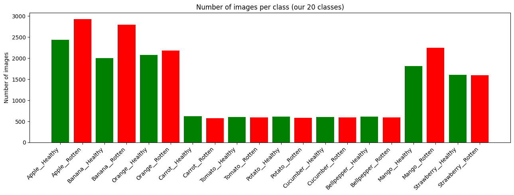
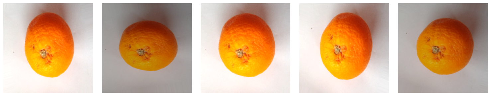
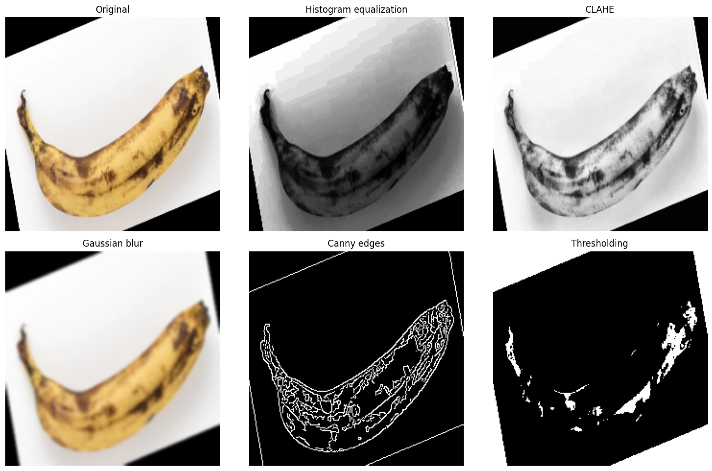
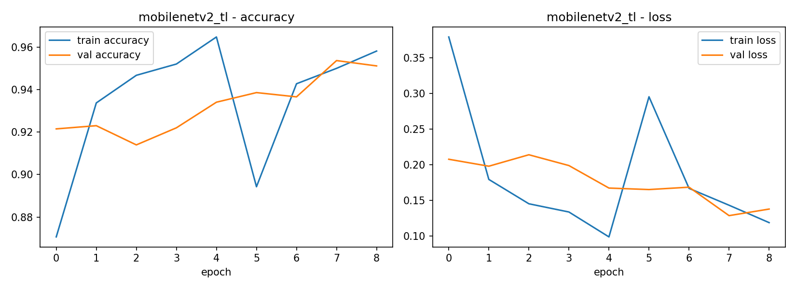
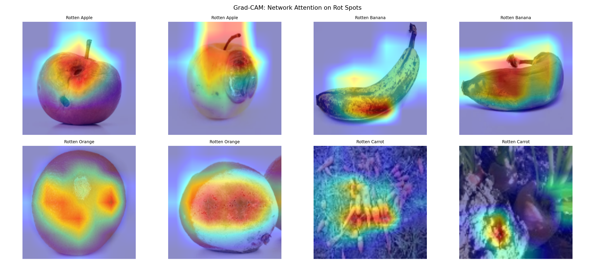
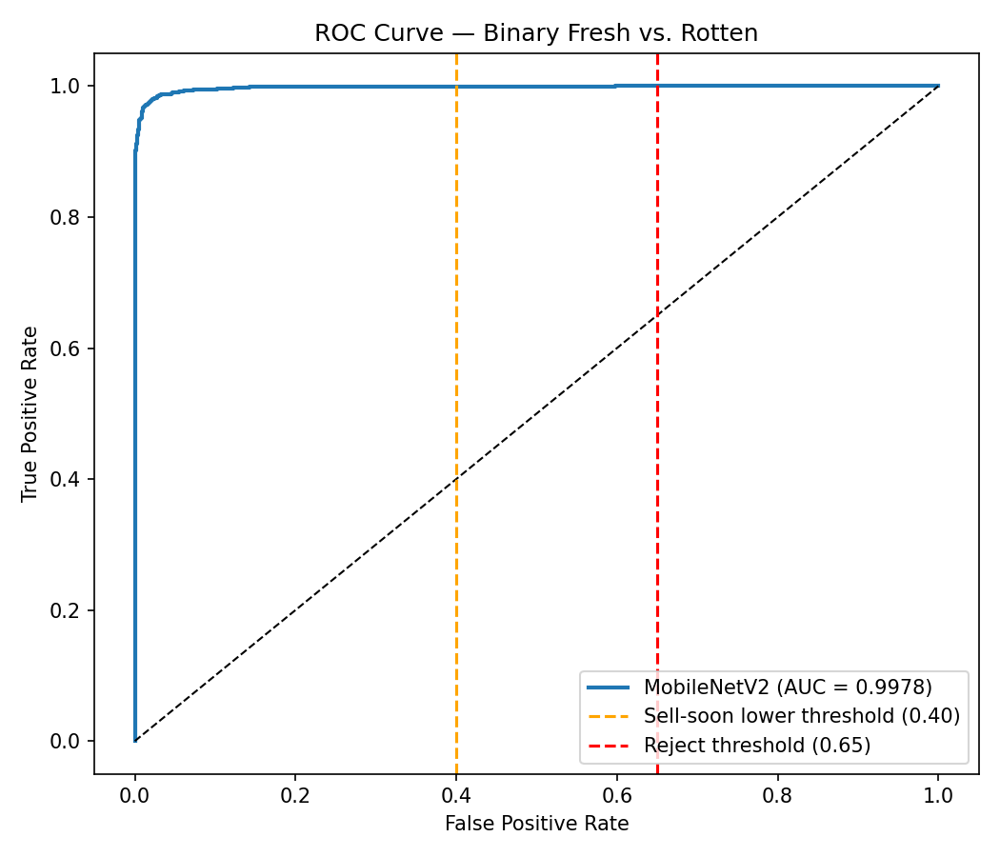
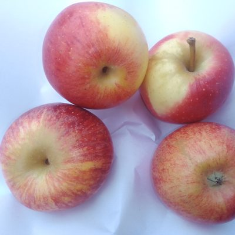
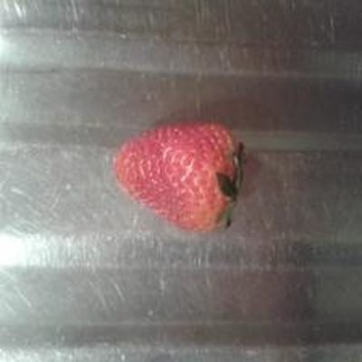
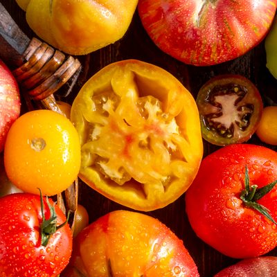
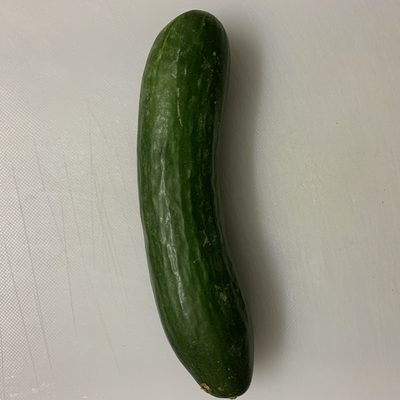

FreshGuard
A camera that reads freshness and turns it into a price.
Point a phone at loose produce. A two-stage computer-vision pipeline grades it in real time, a forecaster predicts next week's spoilage, and every verdict becomes a markdown and a reorder signal. One FastAPI service, running on hardware stores already own.
spectral lab · lab/spectral
An apple with no expiry date.
Supermarkets lose 4–6% of produce revenue to shrink every year. Most of it is not spoilage you could never prevent. It is margin that walked out the back door because the markdown decision arrived a day too late.
An apple graded "sell soon" on Tuesday is marked down and sold. The same apple found Wednesday, past the window, is a total loss. The fruit barely changed. The clock did. And the hardest data point in the store is this: loose produce carries no printed expiry date. No barcode, no lot number. The only signal of how close it is to the end of its life is how it looks.
27,700 images, one locked preprocessing contract, and a finding we did not expect.
23,537 examples of fresh and rotten.
FreshGuard learns from the Kaggle "Fruit & Vegetable Disease" dataset: ~27,700 images across 20 balanced classes, ten produce types each split fresh and rotten. We hold out 15% for an honest test, leaving 23,537 train / 4,140 test. The interesting part is not the size. It is two decisions about how to feed it.
10 produce × {fresh, rotten}. Apple · banana · orange · carrot · tomato · potato · cucumber · bell pepper · mango · strawberry.

balance
augment
preprocessThree architectures, one controlled experiment, a 3× accuracy jump on 5.5× fewer parameters.
We didn't pick the model. We ran the bake-off.
The same data and task went to three architectures of rising structural cleverness. The result is one of the cleanest stories in applied deep learning, and it runs against our own intuition about size.
The ANN flattens each image into a vector before its first layer, and that single act is fatal: a bruise three rows up becomes two unrelated numbers in a list of thousands. Convolution fixes the geometry, sliding shared filters so the model sees local patches everywhere. Transfer learning wins outright by importing a MobileNetV2 backbone pretrained on ImageNet's 1.4M images, then learning only the last mile.
Accuracy races to value; the param chip morphs down (14.3M → 2.6M). More accurate and smaller.
Freeze first to set the head, then unfreeze the top with a 100× smaller learning rate.
Borrow the features, then nudge them.
A fresh classification head fires large, noisy gradients in its first steps. Leave the powerful backbone trainable at that moment and those gradients tear apart the ImageNet features you imported. So we fine-tune in two deliberate phases.
The callbacks: EarlyStopping (patience 3, restore best) · ModelCheckpoint (best val_acc) · ReduceLROnPlateau (×0.3, min 1e-6) · TensorBoard. Validation stayed below training throughout, with no overfitting.

val ≤ train · no overfitNear-perfect on the in-store call, and candid about the one class it finds hard.
0.994 on fresh versus rotten.
A single accuracy number hides sins, so we evaluated on the dimension a store actually cares about. On the binary fresh-vs-rotten decision, the model scores a ROC-AUC of 0.9938. That value, this close to 1.0, means the rotten signal and the fresh signal almost never overlap. It is the decision behind every price action in the store.
The 20×20 confusion matrix tells the reassuring half: it is diagonal-dominant, and the errors that remain are intra-produce-type (sell-soon apple vs fresh apple), not across the fresh/rotten boundary. The model rarely makes the expensive mistake of calling rotten produce fresh.
20×20 confusion. Lime diagonal = correct; coral = error, clustered inside the cyan produce-family boxes.
ROC traces to AUC 0.994 against the random-chance diagonal.
A heatmap that lands on the actual bruise, not the background, at zero extra cost.
A model that points at what it saw.
A model that is right for the wrong reasons is a liability under a food-waste law. Grad-CAM answers "where did it look?" by turning the network's own gradients into a heatmap. Bright regions are the pixels that pushed the verdict. When that brightness lands on a brown patch, staff trust the call and an auditor sees the evidence.

bright = drove the verdictThe heatmap is computed from the last convolutional layer the un-nested model exposed in chapter 05. Explainability is not a second model auditing the first; it is the same model, made to point.
Probabilities become a price, with a built-in "I don't know."
It is allowed to abstain.
We collapse 20 numbers into the one that matters: rotten_prob, the probability mass summed over all rotten classes. A sell-soon band of (0.40, 0.65) sorts the item, which flows straight to a markdown. And below 0.70 confidence the model does not guess: it abstains to a review tier and hands the item to a human.
Also reported: top-3 classes and a normalised entropy (0 certain → 1 uniform) as an out-of-distribution alarm.
Push toward 0.65 for reject, or drop confidence under 0.70 (drag near the band edges) to trigger the human-review gate.
Each defense fixes a specific way a real store breaks a clean model.
Robustness lives at inference, not in the weights.
White balance
Gray-world neutralises warm aisle lighting so a fresh apple stops drifting toward "orange." Clip 0.7–1.5: correct the cast, don't invent one.
Test-time aug
Classify the crop and its mirror, average the softmaxes. One odd viewpoint can't sway the verdict.
Saliency crop
Lock onto the most colour-saturated blob so it grades the strawberry, not the grey table beneath it.
Majority vote
15-frame softmax history per ByteTrack ID (SMOOTH_WINDOW=15). A glare or motion-blur frame can't flip the call.
HSV severity
Classic CV, not the net: dark v<70 or brown h<30,s>60,v<140 → rot_area_fraction → the markdown depth. Auditable by design.
Detection and tracking so each item is graded once and voted over time.
Find it, follow it, then decide.
Finding produce and grading produce are different jobs. YOLOv8n (pretrained on COCO) detects; ByteTrack assigns each physical item a stable ID across frames, so the system accumulates evidence over time and counts each apple exactly once instead of re-grading it thirty times a second.
Items drift under the aperture; a stable ID per item accumulates a 15-frame vote, then stamps one verdict and increments the count once.
A spoilage grade is a verdict on today. A forecast is a plan for next week.
28 days in, 7 days out.
The vision model answers "is this apple fresh now?" A manager needs more: how much will rot next week, so they can order the right amount and staff the markdown surge before it arrives. A compact LSTM(64) → Dense(7) reads the last 28 days of flagged-item counts and projects the next 7 in one shot.
Feature engineering is the whole game. Each day carries 7 features, six of them calendar. Day-of-week and day-of-year are encoded as sin/cos pairs so Sunday and Monday sit next to each other on a circle, not six apart on a line. The model reads the calendar instead of fighting it.
sin/cos encoding: the 7-day cycle is continuous, no fake jump from Sunday to Monday.
Version one lost to a one-line baseline. That was the most useful day of the project.
A failure, a diagnosis, a near-optimal fix.
The first LSTM took only the count series and lost to a trivial naive baseline by 6.8% MAE. A recurrent network beaten by one line of code that copies last week. The instinct is to hide that. The correct move is to interrogate it.
The naive baseline copies last week's matching weekday, so it cannot anticipate a calendar-keyed shock, a holiday surge or end-of-month markdown block. The count-only LSTM was blind to it too, because nobody told it what day it was. The fix was not a bigger network. It was the six calendar features: input (28,1) → (28,7).
Naive 6.26 → LSTM 3.59 MAE, with the irreducible noise floor at 3.19. The gap left is noise, not weakness.
A seven-number forecast is not a decision. The action plan is.
Forecast → reorder. Scan → better forecast.
compute_action_plan turns the curve into one instruction. Week-over-week delta: down 5%+ → "order less, lighter week"; up 5%+ → "brace for markdowns, tighten ordering"; else "hold steady." The manager never sees a tensor.
at 0.60 × €0.55 blended unit€0
Land on compliance, expand on margin, defend with a data flywheel.
A live mandate, a data gap only AI can fill.
Compliance, not nice-to-have
Law 1/2025 makes acting on end-of-life produce mandatory, and the obligation lands on loose produce, the one category with no date to drive it. Food-waste regulation is moving EU-wide, repeating the same blind spot.
Hardware you already own
A phone or webcam, no special sensor. The best model is 2.6M params. Explainable by construction (Grad-CAM), and self-improving via the review queue and forecast flywheel. Each is useful; together they're hard to copy.
Two stakeholders, one console
The sustainability officer owns the Law 1/2025 audit trail; the ops lead owns produce margin. FreshGuard is the compliance system and the margin-recovery system in the same deployment.
Unit economics, conservative by construction
We only credit value on sell-soon items marked down and sold, at 60% of retail. Fresh would have sold anyway (zero incremental); reject is already lost (zero). We exclude the two largest buckets on purpose, so the math only ever counts genuinely saveable margin. The point is the leverage: even crediting only the saveable band, the recovered margin comfortably clears a per-store SaaS price, and every rescued unit is also a logged compliance event.
Market, illustratively sized
Global grocery with loose produce. The recoverable-margin pool, of which FreshGuard captures a software slice.
Chains with loose-produce sections in compliance regions, where the buying trigger is live today.
A 24–36 month beachhead: Spanish and early EU chains, compliance-exposed and ready to pilot CV.
All three layers illustrative, sized top-down to show the shape of the opportunity, not a measured number.
Maturity is credibility. The caveats are stated up front.
The honest lab board.
Clean Kaggle data vs a real store's lighting and cameras. Needs a small per-store calibration set, the review queue is built for it.
One laptop CPU can't grade a fast belt. Batch frames or add an edge GPU / Jetson.
Today it recommends a markdown; applying it at the shelf label needs POS work, the step that becomes the switching cost.
The € figures are illustrative, not measured. The pilot exists to replace them.
The stack
Plus Grad-CAM explainability, classic-CV robustness, and a vanilla-JS 6-tab ops console: Live scan · Manager dashboard · Market prices · Review queue · Model evidence · Lab. No framework.

evidence roomArchitecture coverage
FreshGuard exercises every predictive architecture in scope, and deliberately stays predictive: generative AI is excluded by the project brief.
A 10-second spot, generated in code with real produce. One line, shelf-edge to social.
Read the fruit, not the date.
Binned. Every year.




Auto-plays in view, built entirely in code with your dataset's produce photos (no video file). Screen-record it for a shareable spot, or drop a real clip into a <video> here.
Live · point the lens at the room
Point. Read. Decide.
The instrument finally reads the room. Every concept above, firing at once, in the real 6-tab ops console.
Opens the real 6-tab app. For the live camera + predictions, run it via FastAPI and it serves at localhost:8000.